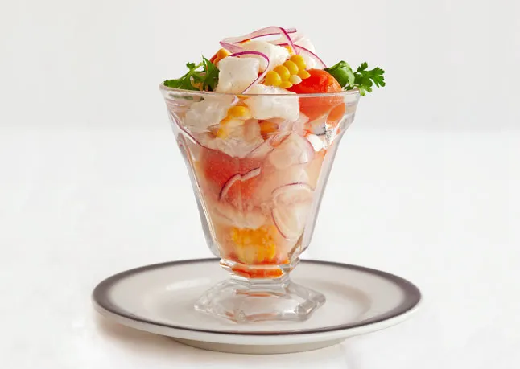

Peruvian Ceviche

Peruvian ceviche by Gast N Acurio of La Mar in Lima, Peru
INGREDIENTS
LECHE DE TIGRE
- 2/3 cup of fresh lime juice
- 2 garlic cloves, smashed
- 1 packed tablesoon of fresh cilantro leaves, chopped
- 1/2 aji limo or habanero chili, seeded and halved lengthwise
- 1/2 small red onion, chopped
- 1/2 bottled clam juice (optional)
CEVICHE
- 1 small sweet potato (approx. 8 oz)
- ear of corn, husked
- 1/2 aji limo or habanero chili, seeded and halved lengthwise
- 1 lb of red snapper or black grouper, cut into 1/2-in cubes
- 1 small red onion, quartered and thinly sliced, divided
- kosher salt
- cilantro leaves
PREPERATION
LECHE DE TIGRE
- Set a fine-mesh sieve over a small bowl. Purée first 4 ingredients and 4 large ice cubes in a blender until smooth. Add onion; pulse 3-4 times. Strain liquid into a medium bowl. Stir in clam juice, if desired; season with salt. Cover and chill.
CEVICHE
- Pour water into a large pot fitted with a steamer basket to a depth of 1 inch; bring to a boil. Add sweet potato, cover, and cook until just fork-tender, about 30 minutes. Transfer to a plate; let cool.
- Meanwhile, add more water to same pot, if needed, to measure 1 inch; bring to a boil. Add ear of corn to pot and steam until crisp-tender, 2-3 minutes. Transfer to a plate; let cool completely.
- Halve potato lengthwise. Using a small melon baller, scoop out potato balls and place them in a small bowl; set aside. Cut kernels from cob. Reserve 1/3 cup kernels (save extra kernels for another use).
- Rub a large bowl with cut sides of chile; discard. Place fluke, 2/3 of onion, leche de tigre, and 4 large ice cubes in bowl; stir well. Let marinate for 2 minutes; remove ice. Fold in potato and corn; season with salt.
- Using a slotted spoon, divide ceviche into small bowls or onto plates. Drizzle ceviche with leche de tigre from bowl; garnish with remaining onion and cilantro.